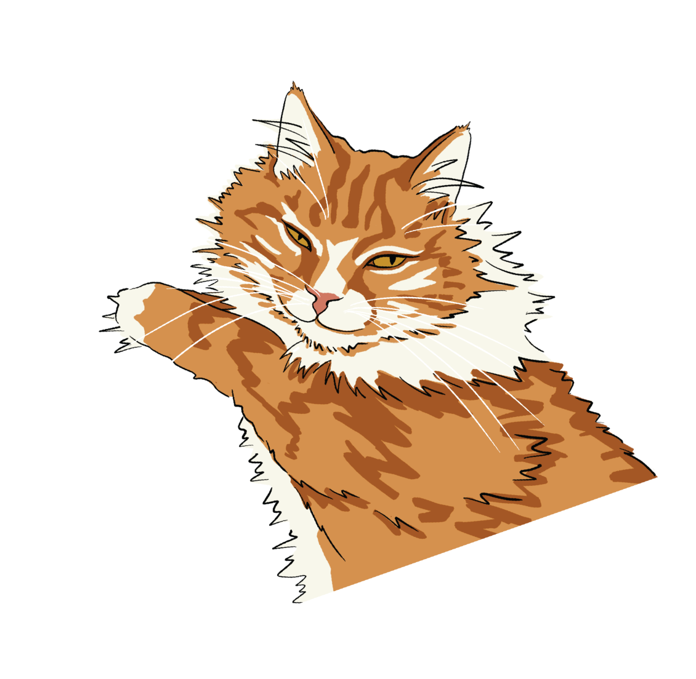

Kitty Brew Cat Café is where coffee lovers and cat lovers come together. Enjoy a handcrafted drink while relaxing with 20–25 adoptable cats from local rescues.
Reservations recommended. Walk-ins welcome if there's room.


Here's how it works ~

Coffees, teas, frozen treats and snacks. Free to enter and always open to the public.

Spend 50 minutes playing, relaxing, or just enjoying the cats' company. $13 per person.

Fall in love? Our partner rescues can help you take a furry friend home.

Since opening in 2017 as Cincinnati's first cat café, we've helped over 5,000 cats find loving homes. Every visit, whether it's a latte to go or an hour in the lounge, directly supports our rescue partners.
murals by Brightwall Collective · cat tree, couches & plenty of sunbeams





Mockup: on the real site these six would be your latest posts, updated automatically.